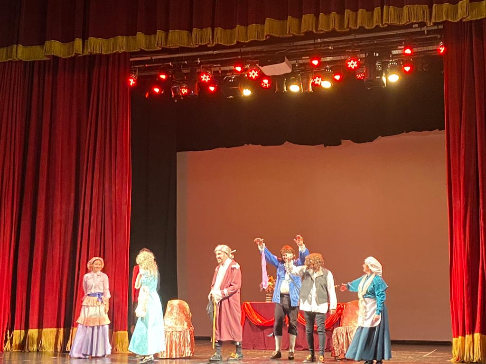
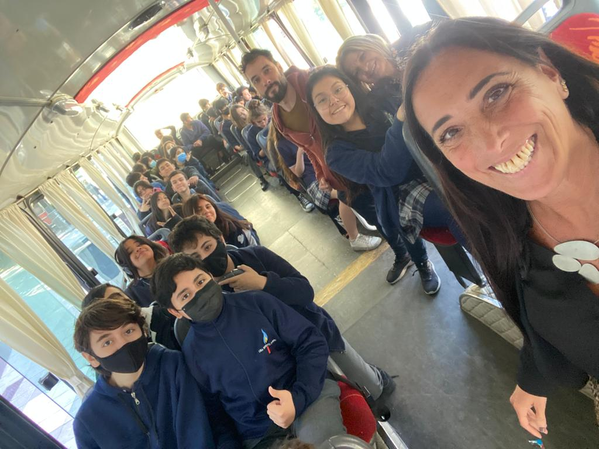
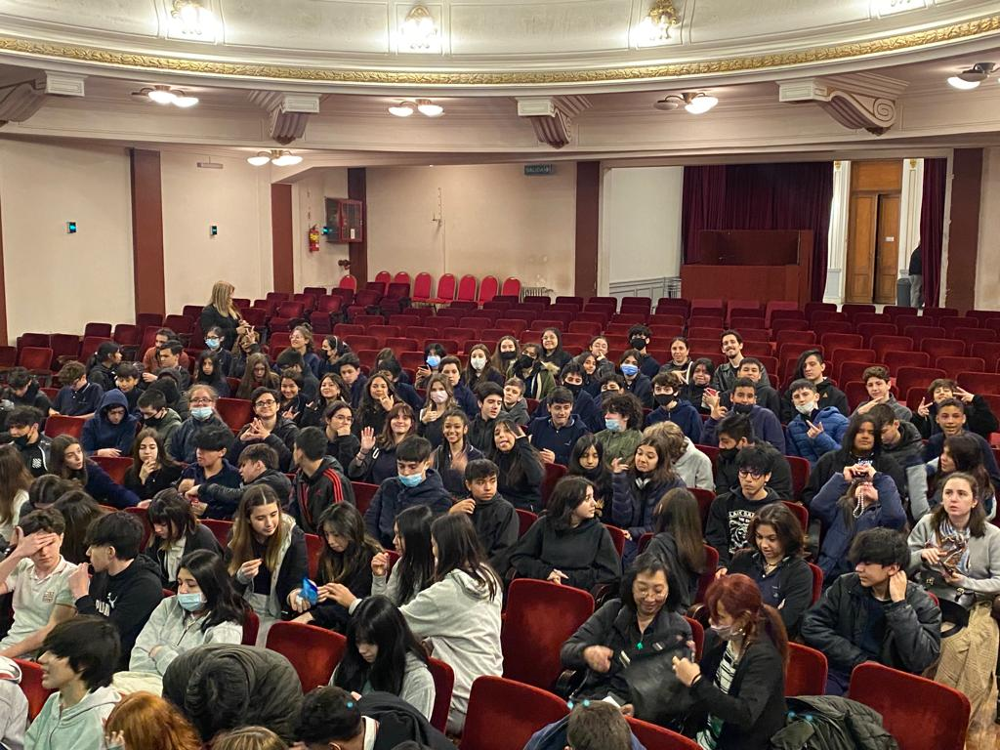

EL C.E.A.E.S Y SU VIAJE AL TEATRO DEL GLOBO
Por Agustina Villarreal de 1°A
El día miércoles 28 de septiembre los alumnos de 1° A y B, 2° A y B y los
profesores Florencia Bazzini, Fernando Fariña, María Ana Rago, Gabriel Praticó
y el rector Ricardo Barboza emprendimos un viaje hacia el Teatro Del Globo.
La obra que vimos fue “Médico a palos”, el autor de esta destacable pieza artística
es el dramaturgo, actor y poeta francés Molière. Es considerado cómo uno de los mejores
escritores de la lengua francesa y la literatura universal.
En esta obra se cuenta cómo la mujer de un leñador vago y alcohólico, le da a este una lección.
Ella convence a dos servidores de Geronte, de que su marido es el único médico capaz de curar
a la joven doncella. El problema es que Bartolo (el leñador) negará ser ese médico.
Las críticas que realizaron profesores y alumnos acerca de la obra fueron positivas. Algunos sabían
de qué se trataba y otros simplemente se sorprendieron por cómo este autor jugaba con el grotesco y
exagerado. Todos elogiaron el modo en que fue representada por los actores.
En mi opinión, es una buena comedia muy entretenida, con cada acto me sacaban una sonrisa. Me gustó cómo
Molière habla de su severa crítica hacia los médicos y hacia la clase alta. Yo recomiendo esta obra para
niños y adultos. Me gustaría volver a repetir esta experiencia.


